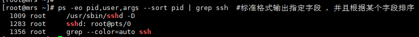
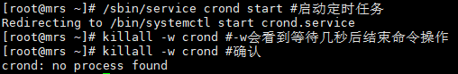

Linux进程管理命令
文档目录：
一、ps：查看进程
二、pstree：查看进程状态树
三、pgrep：查找匹配条件的进程
四、kill：终止进程
五、killall：通过进程名终止进程
六、pkill：通过进程名种植进程
七、top：实时显示系统中各个进程的资源占用状况
八、nice：调整程序运行时的优先级
九、renice：调整运行中的进程的优先级
十、nohup：用户退出系统进程继续工作
十一、strace：跟踪进程的系统调用
十二、ltrace：跟踪进程调用库函数
十三、runlevel：输出当前运行级别
十四、init：初始化Liunx进程
十五、service：管理系统服务
一、ps：查看进程
1、ps #当前终端窗口的进程 PID进程标识符 TTY进程所属的终端控制台 TIME进程所使用的总的CPU时间 CMD正在执行的命令行
2、ps -ef #使用UNIX格式输出每个进程信息 UID进程所属UID，PPID父进程 C为cpu占比 STIME进程开始时间 tty无法终端？本地tty1-6，网络pts/0
3、ps -ef | grep ssh #过滤进程
4、 ps aux #使用BSD格式显示进程信息 vsz虚拟内存量 stat该进程的状态：r运行S中断睡眠d不可中断睡眠t侦测/停止z终止+前台l多线程N低优先级<高优先级s进程领导者L页面锁定到内存
5、ps -u root # UNIX格式参数，使用用户的相关进程
6、 ps -l #以详细的格式显示进程状态 PRI：优先执行顺序 NI-nice值 ADDR-进程在内存哪个部分，running一般是- SZ使用掉内存大小 WCHAN-目前进程是否运行中-正在运
7、ps -eH #-e显示所有进程，-H参数显示进程数,UNIX格式
8、ps axf|grep ssh #ax显示所有进程，f显示进程数，BSD格式
9、ps -eo ‘%P%y%x%c’|grep ssh #输出指定字段 通过man ps查询字段 p-ppid y-tty x-time c-command
10、ps -eo pid,user,args –sort pid | grep ssh #标准格式输出指定字段 ，并且根据某个字段排序

二、pstree：查看进程状态树
1、pstree #不指定进程pid号，或者不指定用户名，即以init进程为根进程，显示系统所有进程信息
2、pstree root #显示指定用户的进程
3、pstree -u #显示进程所属的用户组
三、pgrep：查找匹配条件的进程
1、pgrep crond #显示指定进程的pid，结合ps与grep功能
2、pgrep -u root #-u显示指定root用户的所有进程号
四、kill：终止进程
1、kill -l #显示系统的所有信号
2、kill -l SIGKILL #对信号名与数字进行互换
3、常用信号说明：
HUP(1)：挂起-通常因终端掉线或用户退出而引发
INT(2)：中断-通常是按下ctrl+c组合键来触发
QUIT(3)：退出-通常是按下ctrl+\组合键来触发
KILL(9)：立即结束进程的运行
TERM(15)：终止-通常在系统关机时发送
TSTP(20)：暂停进程的运行-通常是按下ctrl+z组合键来触发
4、kill 1474 #默认使用信号15终止进程，常用
5、kill -9 1474 #强制关闭进程
6、kill -0 1474 #特殊信号，用于进程检查
五、killall：通过进程名终止进程
1、killall crond #终止定时服务进程
2、killall -w crond #-w会看到等待几秒后结束命令操作

3、killall -u lulu nginx #终止lulu用户的所有nginx进程
六、pkill：通过进程名种植进程
1、pkill crond #终止定时任务进程
2、pkill -t tty1 #-t杀死指定终端的进程（正在编辑/etc/rc.local）
3、pkill -u root #杀死指定用户的所有进程
七、top：实时显示系统中各个进程的资源占用状况
1、top #交互式命令
说明：
第一行：任务列队信息，同uptime命令的执行结果，包含：当前系统时间，系统运行时间，当前登录的用户，1m/5m/15m的平均负载情况
第二行：tasks为任务(进程)，系统共104个进程，其中运行中1个，103个休眠，0个stoped，0个僵死
第三行：cpu状态：us-用户空间占比，sy-内核空间占比，ni-改变过优先级的进程占比，id-空闲cpu占比，wa-i/o等待占比，hi-硬中断占比，si-软中断占比，st-虚拟机占比
第四行：内存状态：total-物理内存总量，used-使用中内存总量，free-空闲内存总量，buffers-缓冲的内存量
第五行：swap交换分区信息：total-交换区总量，used-使用的交换区总量，free-空闲交换区总量，cached-缓存的内存量
第六行：空行
第七行：各进程的状态监控：PID-进程id，USER-进程所有者，
2、top再按照1：显示多核不同cpu的信息
3、top -b #以批处理模式显示进程信息，不停向下刷新
4、top -c #使用参数-c显示进程的完整路径
5、top -d 3 #指定更新周期为3秒
6、top -n 2 #指定更新次数为2次后退出
7、top -p 1403 #-p指定进程号监控
8、top中b、z、x为高亮显示，> 与 < 可以向右或向左改变排序列
八、nice：调整程序运行时的优先级
1、nice #显示当前系统默认的程序运行优先级为0
2、nice nice #以默认值10来调整第二个nice命令运行的优先级
3、nice nice nice #第二个nice命令运行优先级的基础上再加10，为20，但是最小程序运行优先级为19

4、ps -l #查看进程的优先级（PRT越小优先级越高，NI-优先值）
5、nice -n -10 vim test2 & 使用nice调整为-10
九、renice：调整运行中的进程的优先级
renice -n -5 -p 1471 #-p指定值为2711的进程，调整NI值为5
十、nohup：用户退出系统进程继续工作
nohup命令将输出重定向到终端，默认当前目录的nohup.out文件中，如果当前目录文件不可写，则输出重定向到$HOME/nohup.out文件中
1、nohup ping www.baidu.com #当前终端已hang住，此时强制关闭当前终端，ping命令依然会在后台运行
另一个ssh终端打开
2、nohup ping www.baidu.com & #一般nohup配合&运行，让程序直接后台运行
十一、strace：跟踪进程的系统调用
用于检查一个应用程序所使用的系统调用以及它接收的系统信息。strace会追踪程序运行时整个生命周期，输出每一个系统调用的名字、参数、返回值、消耗时间等，是高级运维和开发人员排查问题的杀手锏
1、strace -tt -f /usr/bin/ping #-f跟踪目标进程，以及子进程，-tt每一行前加上时间信息
2、strace -tt -f -e trace=file /usr/bin/ping #trace=file只跟踪与文件操作有关的系统调用
3、strace -tt -f -e trace=file -p 1597 #-p跟踪指定的进程
4、strace -c /usr/bin/ping #-c为进程所有系统调用做一个统计分析
5、strace -c -o tongji.log /usr/bin/ping #-o将strace结果输出到文件
6、strace -T /usr/bin/ping #-T将每个系统调用花费的时间打印出来，花销在调用行最右边的尖括号内
十二、ltrace：跟踪进程调用库函数
ltrace能跟踪显示调用了哪个库函数，用法与strace非常相似
1、ltrace /usr/bin/ping #ltrace接需要检测的命令语句
2、ltrace -p 1665 #-p跟踪指定进程号
十三、runlevel：输出当前运行级别
1、runlevel #查看当前系统的运行级别
2、系统级别说明
0：停机
1：单用户模式
2：无网络的多用户模式
3：多用户模式
4：未使用
5：图形界面多用户模式
6：重启
十四、init：初始化Liunx进程
init为liunx下进程初始化工具，是所有Liunx进程的父进程，根据/etc/inittab创建Liunx进程
1、init 0 #关机
2、init 6 #重启

十五、service：管理系统服务
service用于对系统服务进行管理：比如start、stop、restart、reload、status等，CentOs7里被systemctl取代
1、service –status-all #显示所有服务状态
2、service crond stop #停止服务
3、service crond start #启动服务
4、 service crond restart #重启服务
5、service crond status #查看服务状态
本博客所有文章除特别声明外，均采用 CC BY-SA 4.0 协议 ，转载请注明出处！